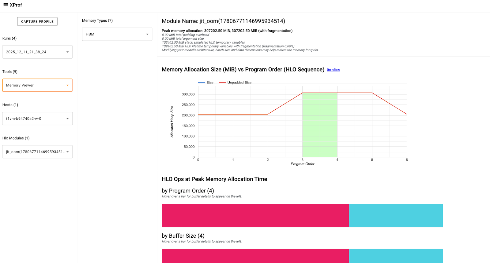

Debug OOM errors with XProf#
Out Of Memory (OOM) errors occur when the accelerator’s (GPU or TPU) High Bandwidth Memory (HBM) capacity is exhausted. Some common causes for OOM issues and debugging techniques are detailed in E1000 - Compile Time HBM OOM documentation and JAX documentation on GPU memory allocation.
This page describes how to use XProf’s Memory Viewer tool to visualize your JAX program’s memory usage, identify peak usage instances, and debug OOM errors. This involves the following steps:
Run your program with
jax.profiler.traceto capture the profile.Start XProf in the background, and use the Memory Viewer tool to view memory utilization details.
Example program#
The following JAX program leads to an OOM error:
import jax
from jax import random
import jax.numpy as jnp
@jax.profiler.trace("/tmp/xprof")
@jax.jit
def oom():
a = random.normal(random.PRNGKey(1), (327680, 327680), dtype=jnp.bfloat16)
return a @ a
if __name__ == "__main__":
oom()
Note: Prefer jax.profiler.trace instead of
jax.profiler.start_trace/jax.profiler.stop_trace because the
jax.profiler.trace context manager handles profiling in an exception safe
manner.
On a TPU-machine, this program fails with:
XlaRuntimeError: RESOURCE_EXHAUSTED: Allocation (size=107374182400) would exceed memory (size=17179869184) :: #allocation7 [shape = 'u8[327680,327680]{1,0:T(8,128)(4,1)}', space=hbm, size = 0xffffffffffffffff, tag = 'output of xor_convert_fusion@{}'] :: <no-hlo-instruction>
(On a GPU-machine, the error looks like: XlaRuntimeError: RESOURCE_EXHAUSTED: Out of memory while trying to allocate 214748364800 bytes.)
Run XProf#
Install xprof (pip install xprof), and start an XProf instance specifying
the directory where the profile is stored:
xprof --logdir=/tmp/xprof/ --port=6006
Go to the instance (on a local machine, at http://localhost:6006). In the
Tools dropdown, select Memory Viewer, and in the Memory Viewer tool window,
select HBM in the Memory Types dropdown (usually selected by default).

The XProf: Memory Viewer tool documentation describes the components of the tool and the information presented.
Focus on the HLO Ops at Peak Memory Allocation section that shows three buffer charts at the peak memory usage point. The buffer includes: * Program Inputs and Outputs: Training batches, optimizer states, etc. * TensorCore and SparseCore Temporaries: Dynamic memory required for intermediate calculations (like activations, gradients, etc.)
You can hover on the buffer charts to get more details about the Op like it’s size, shape, allocation type, and more. This can help you identify and evaluate Ops that may have high or long-lasting temporaries, any large input/intermediate/output tensors that have inefficient padding, etc., that are contributing to the peak memory and need to be adjusted or optimized.
Learn specific debugging techniques in E1000: Debugging.